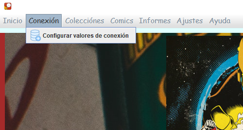

<!DOCTYPE html>
<html>
<head>
<meta charset="ISO-8859-1">
<title>Preparación/title>
<style>
        body {
            font-size: 14px;
        }
        
    	</style>
</head>
<body>
<h1>Preparación</h1>


<p> Desde el apartado de conexion, podemos establecer los distintos valores para la conexión de la applicación y se mantendrán guardados cuando se pulse el botón de guardar."</p>
<br><br>

  	
<p>El primer parametro del "Servidor" es obligatorio para poder conectarse a la API para la gestión de los comics y colecciónes.No se permite guardar los demas configuraciónes sin el parametro obligatorio
</p>

</body>
</html>